Преглед
Moneta им овозможува на студенти и млади вработени за неколку секунди да видат колку пари имаат, каде трошат и дали се во рамките на својот план.
Функционалности
Девет страници, достапни од страничната лента на десктоп или од долната навигација на мобилен.
Почетна (Dashboard)
Нето-вредност, приходи, трошоци и стапка на штедење со споредба со претходниот месец; паричен тек за 6 месеци; трошоци по категорија.
Трансакции
Групирани по ден, пребарување, брзи филтри, резиме, страничење; додавање, уредување и бришење со потврда.
Сметки
Групирани по тип (тековни, кеш, штедни, кредитни картички), салдо во оригинална валута, поврзана дебитна картичка.
Буџети
Месечен лимит по категорија со лента на напредок и статус: во ред, блиску до лимит, над буџет.
Цели
Цели за штедење со процент, преостанат износ и број на денови до рокот.
Повторувачки плаќања
Претплати и редовни плаќања, проценет месечен трошок и календар.
Извештаи
Паричен тек за 12 месеци, трошоци по категорија и кумулативно нето-трошење.
Пазари
Цени на акции, индекси и криптовалути со график по период (Yahoo Finance).
Поставки
Профил, валута за приказ, светла/темна тема, јазик, известувања, CSV-извоз, промена на лозинка.
Применети HCI принципи
Интерфејсот ги следи хевристиките на Нилсен и основните барања за пристапност (WCAG).
| Принцип | Решение во Moneta |
|---|---|
| Видливост на состојбата | Пораки по секоја акција, означена активна страница, ленти на напредок за буџети, цели и штедење. |
| Совпаѓање со реалниот свет | Сметки како во реалноста; кредитниот долг се одзема од нето-вредноста; броеви и датуми форматирани според јазикот. |
| Контрола и слобода | „Откажи“ и линк назад во секоја форма; бришењето бара потврда. |
| Конзистентност | Исти компоненти и бои насекаде: зелена за приход, црвена за трошок; ист распоред на заглавјата. |
| Превенција на грешки | Нативни избирачи за датум и месец, минимален износ, забрана на дупли буџети. |
| Препознавање наместо паметење | Опис под секое поле, икони и бои по категорија, трансакции групирани по ден. |
| Флексибилност и ефикасност | Брзи акции на почетната, филтри со еден клик, пребарување, CSV-извоз. |
| Минималистички дизајн | Јасна хиерархија: нето-вредноста е најистакната, потоа клучните бројки, па деталите. |
| Помош при грешки | Грешките се прикажуваат под полето со разбирлив текст. |
| Празни состојби | Секој празен дел објаснува што ќе се појави и нуди линк за првиот чекор. |
| Пристапност | Еден <h1> по страница, поврзани <label>, role="progressbar", опис на графиците, видлив фокус, текстуална ознака на копчињата со икона. |
| Респонзивност и јазик | Мобилен распоред под 1024 px без хоризонтално лизгање на 390 px; темна тема; целосен превод на македонски. |
Изглед на апликацијата
Снимки од екранот со демо-податоците.
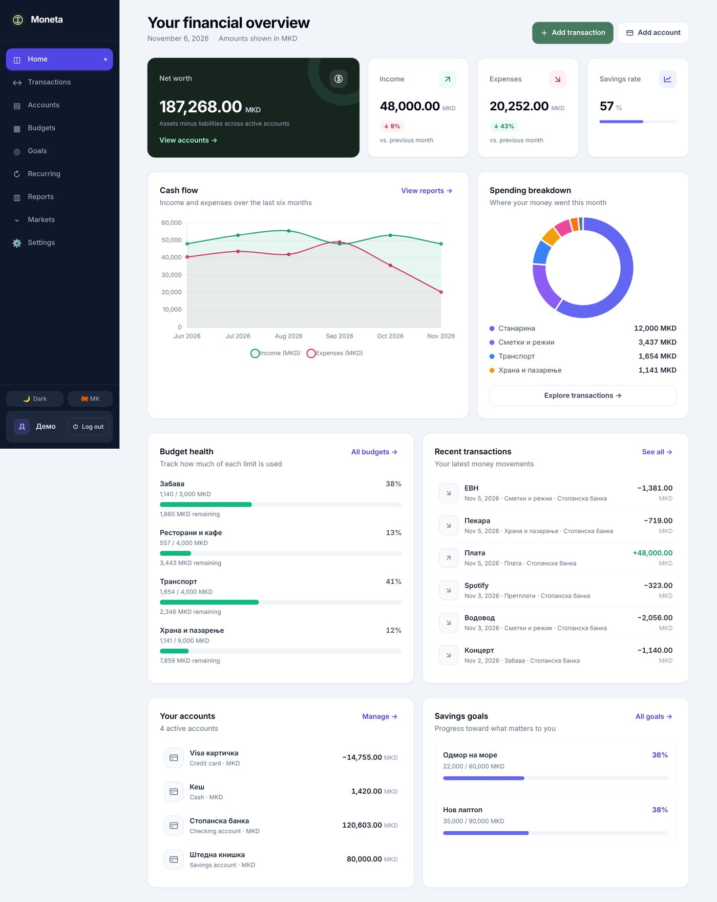
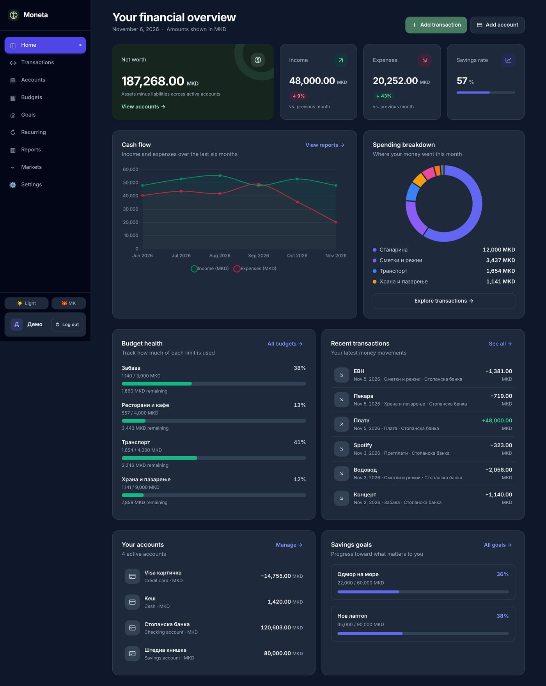
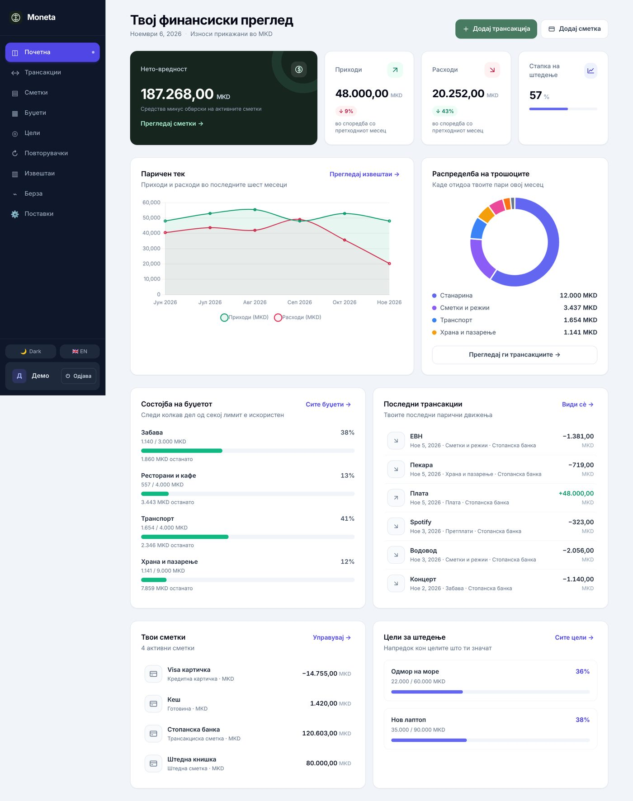
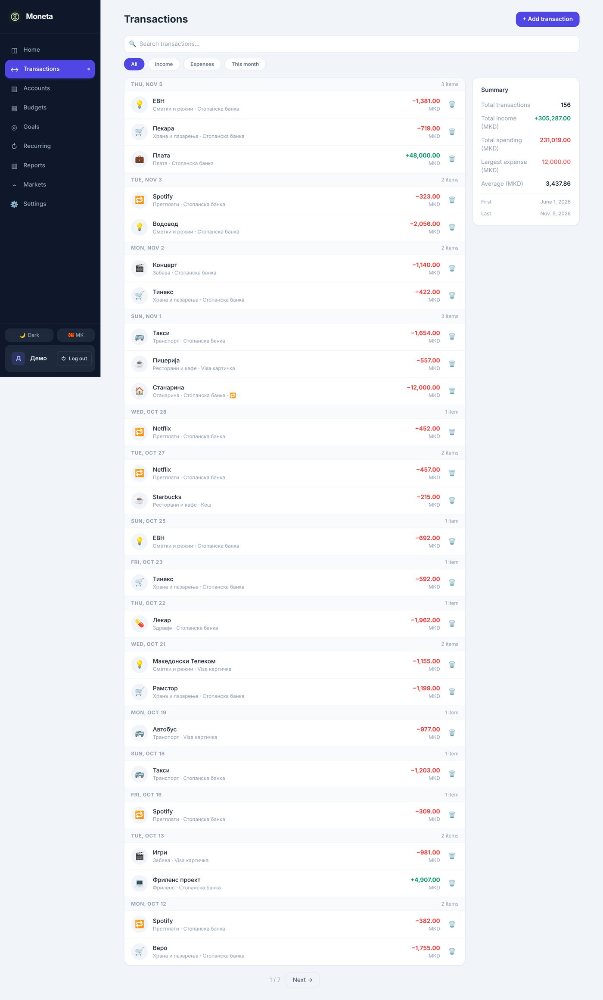
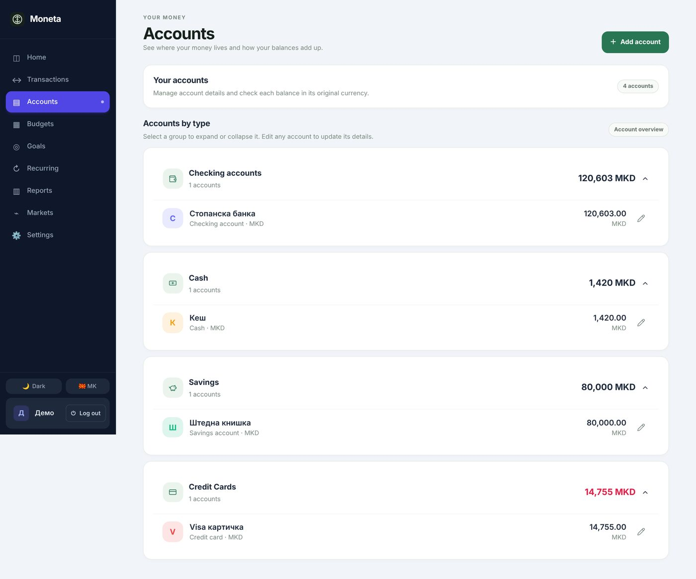
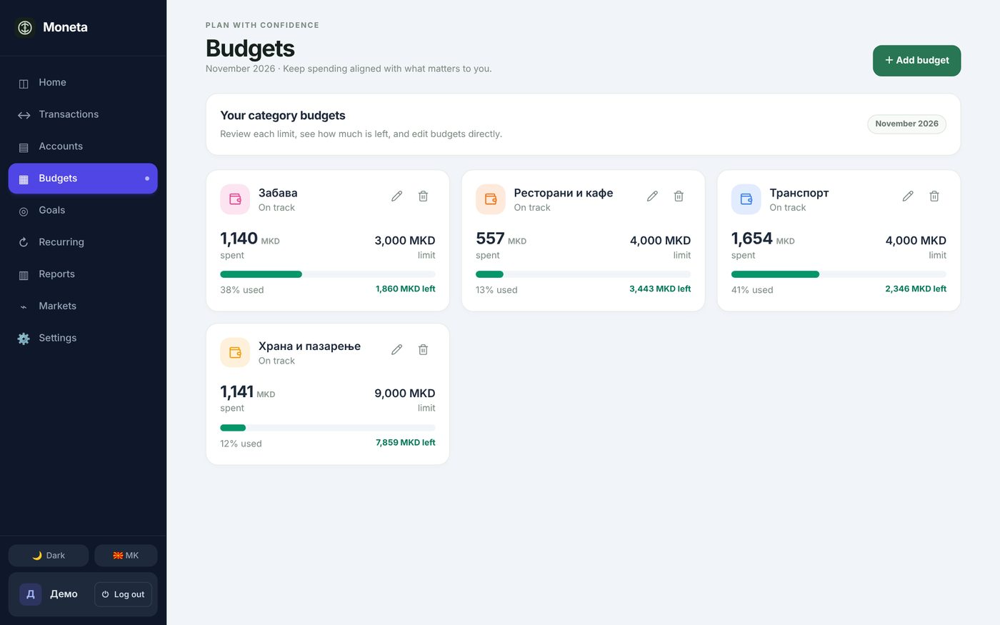
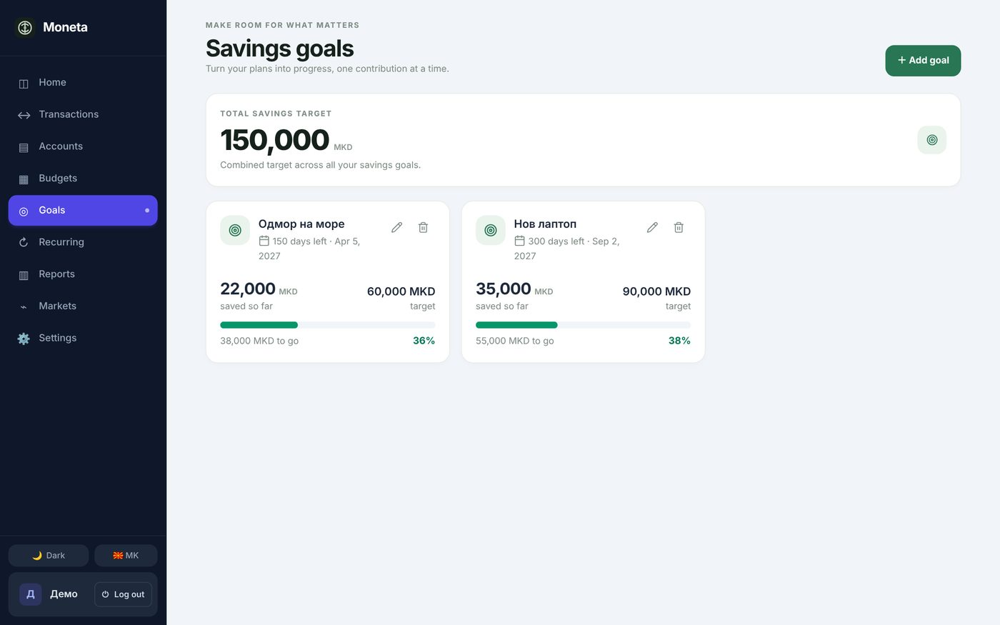
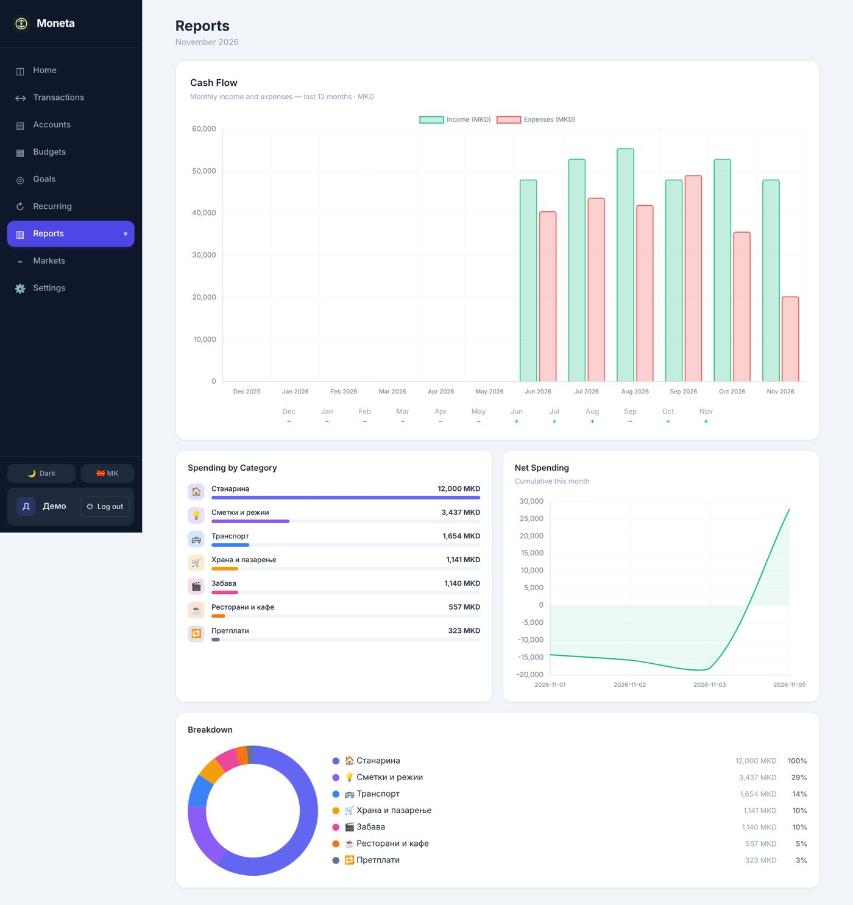
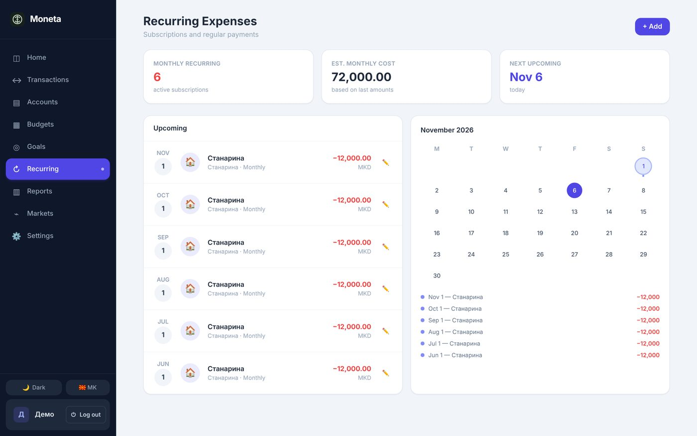
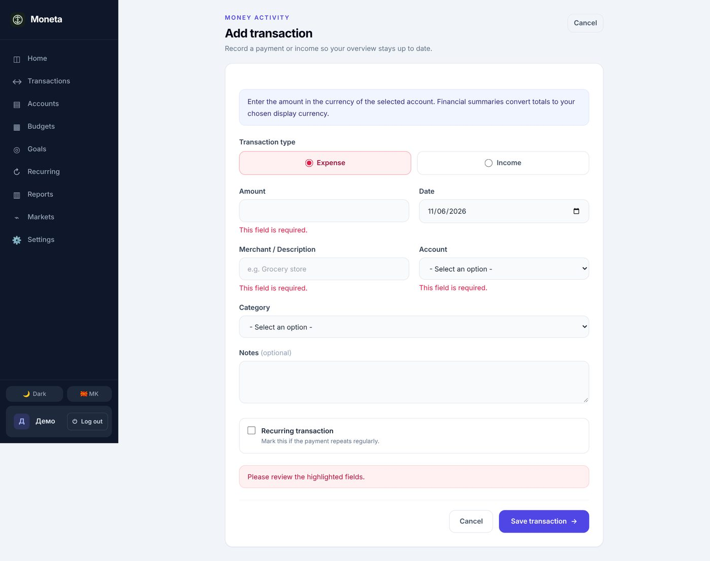
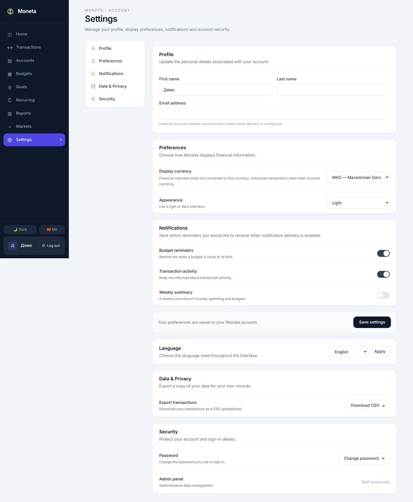
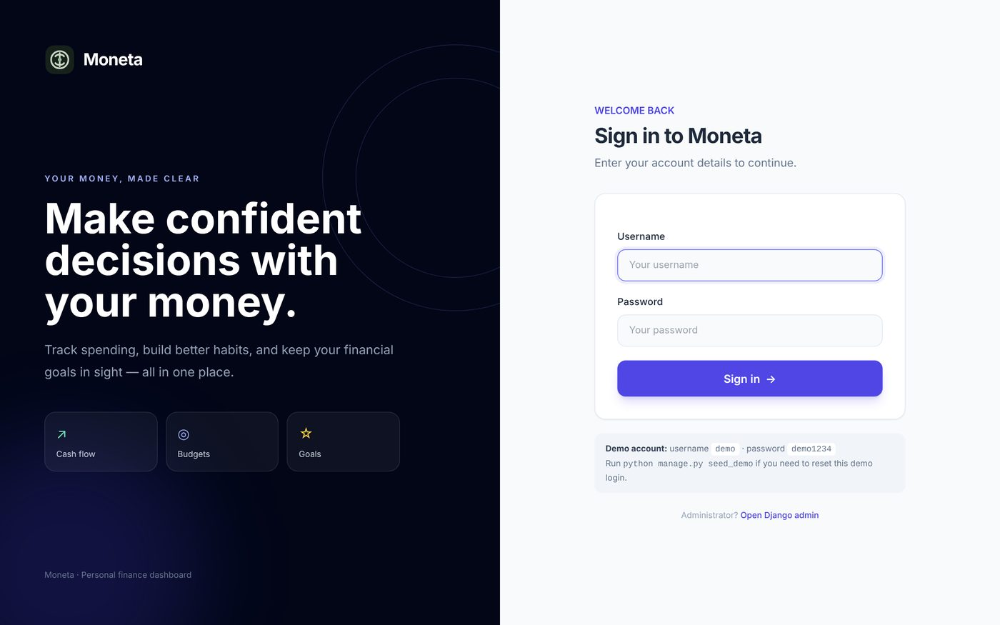
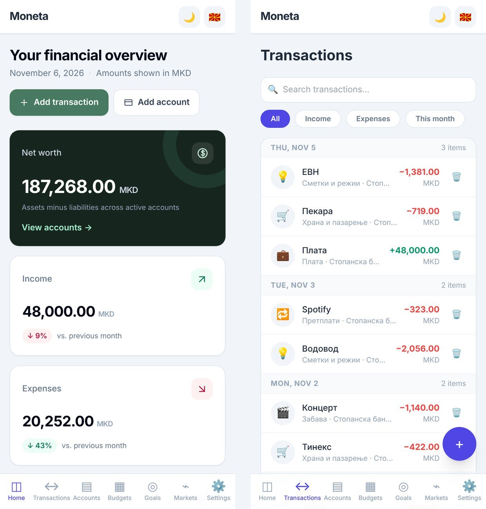
Упатство за тестирање
Седум сценарија, околу 10 минути. Најава со demo / demo1234.
- Преглед. На почетната прочитајте ја нето-вредноста и споредбата со претходниот месец; поминете со глушецот преку графикот.
- Нова трансакција. „Add transaction“ → трошок од 500 MKD за „Храна и пазарење“. Очекувано: порака за успех и ажуриран буџет.
- Валидација. Зачувајте трансакција без износ, или втор буџет за иста категорија и месец. Очекувано: порака под полето, ништо не се зачувува.
- Филтри и извоз. Во Transactions изберете „Expenses“ и пребарајте „Netflix“; во Settings → Data & Privacy преземете CSV.
- Цел. Направете цел и изменете ја така што „заштедено“ ја достигнува целта. Очекувано: порака за достигната цел.
- Јазик и тема. „MK“ и „Dark“ во страничната лента. Очекувано: целиот интерфејс, броевите и графиците на македонски и во темни бои.
- Мобилен. Отворете на телефон или во DevTools на 390 px и навигирајте преку долната лента.
Локално стартување
Потребен е Python 3.12 или понов.
git clone https://github.com/mihajlovb/moneta.git
cd moneta
python -m venv .venv
.venv\Scripts\activate # Linux/macOS: source .venv/bin/activate
pip install -r requirements.txt
python manage.py migrate
python manage.py seed_demo # demo / demo1234
python manage.py runserverПотоа отворете http://127.0.0.1:8000. Автоматските тестови: python manage.py test.
Технологии
Backend
Python, Django 5.2+, django-filter, SQLite
Frontend
Django шаблони, Tailwind CSS, Chart.js, Lucide икони
Објавување
Render (gunicorn + WhiteNoise), GitHub Pages за документацијата
Интернационализација
Django i18n: англиски и македонски, локализирани броеви и датуми